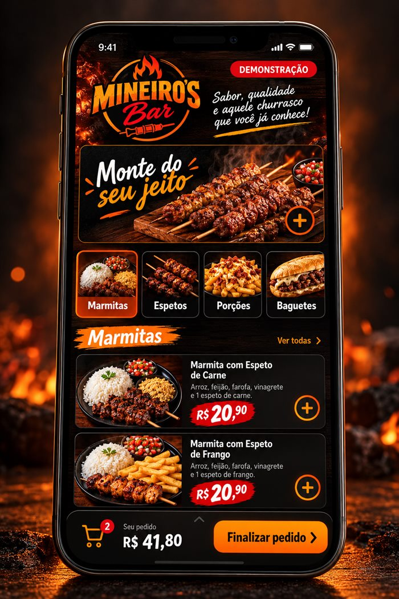
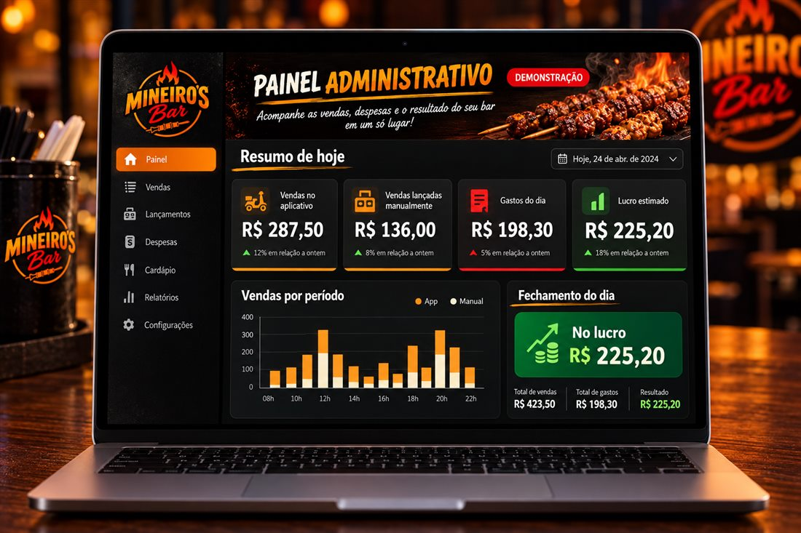

WhatsApp toma tempo
Cada pedido exige perguntas, respostas e conferência manual.
Uma proposta de sistema próprio para receber pedidos, permitir que o cliente monte a marmita e, ao mesmo tempo, mostrar se o dia terminou no lucro ou no prejuízo.

O problema de hoje
Cada pedido exige perguntas, respostas e conferência manual.
Aplicativo, balcão e telefone precisam aparecer em um só lugar.
Sem registrar os gastos, fica difícil saber o resultado real do dia.
Experiência do cliente
Ele escolhe, personaliza e envia tudo organizado — sem precisar perguntar item por item no WhatsApp.
O link chega automaticamente pelo WhatsApp e abre direto no celular.
Seleciona marmita, espeto, acompanhamento, porção ou baguete.
O pedido chega completo, com itens, quantidades e observações.

Painel administrativo
O futuro painel reunirá o que entrou e o que saiu para transformar movimento em informação clara.
A conta que importa
Os números abaixo são apenas uma simulação para demonstrar a lógica do painel.
Automação no WhatsApp
Quando alguém pedir o cardápio, a automação poderá responder com o link. O cliente monta o pedido por conta própria e você recebe tudo organizado.
O link pode ser enviado mesmo quando você está ocupado.
As informações são preenchidas uma vez pelo próprio cliente.
mineirosbar.com.br
Funciona como aplicativo
Será um sistema web instalável: o cliente acessa sem depender de loja de aplicativos e pode adicionar um atalho no celular ou no computador.
Importante
Esta página não é o aplicativo final e não recebe pedidos. As telas, valores e conversas são exemplos visuais de como a solução do Mineiro's Bar poderá funcionar depois da aprovação e do desenvolvimento.
Próximo passo
Se a proposta fizer sentido, o próximo passo é alinhar cardápio, regras de montagem, rotina do caixa e identidade final para transformar esta prévia no sistema real.
Rever a demonstração ↑ PROPOSTA CONCEITUAL • MINEIRO'S BAR